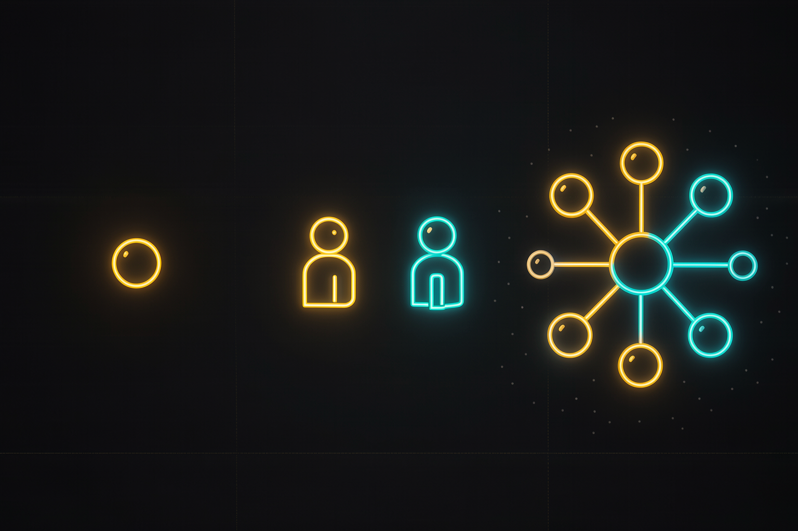

🧍 Loop individual
La forma más sencilla: un agente, una tarea. Hace reason → act → observe y repite hasta "listo". Es la versión directa del esqueleto de la Ruta 1: el mismo "Think→Act→See", el mismo "modelo + herramientas en repeat". Es la más fácil de construir y depurar, y cubre la mayor parte del trabajo. Empieza siempre por aquí.
Lee el diagrama: un solo agente recorre los tres beats y vuelve al principio. Sin segundo agente, sin jefe — solo el ciclo, repitiéndose. Es la forma con menos piezas que pueden romperse.
🧩 Por qué empezar en Solo
Menos piezas = menos errores. Puedes leer lo que hizo el agente en cada vuelta y corregirlo. Pasa a formas con más agentes solo cuando Solo realmente no pueda con la tarea, y el módulo 2.5 te dice cuándo ocurre eso.
🔁 Maker → Checker
Aquí entran dos agentes: un maker hace el trabajo, y un checker separado da una calificación. El checker es una IA nueva, cuya única función es evaluar; por eso no certifica su propio trabajo. Es el beat "observe/check" de la Ruta 1, pero con un agente dedicado exclusivamente a verificar.
Qué ver: la flecha de vuelta (discontinua) es el corazón: mientras el checker rechace el resultado, el maker lo corrige. Solo cuando lo aprueba, termina. Quien hace nunca es quien aprueba.
💡 Cuándo vale la pena el segundo agente
Usa Maker→Checker cuando la la calidad importa y un agente por sí solo tiende a aprobarse demasiado pronto. Ese fue, de hecho, el patrón que generó este curso: un agente copió cada frase de las fuentes y otro volvió a verificar cada URL.
👔 Manager → Helpers
La tercera forma: un agente líder (manager) divide el objetivo en partes y asigna cada una a subagentes (helpers) que trabajan en paralelo. Es el «un jefe, varios ayudantes» de la Trilha 1. Sirve cuando el trabajo es demasiado grande para que un solo agente lo resuelva en secuencia.

Qué ver: las tres formas en una imagen. Fíjate en el abanico de la derecha: un líder arriba y los helpers desplegándose en paralelo abajo. Más agentes al mismo tiempo = más trabajo en menos tiempo, pero más coordinación que gestionar.
Qué ver: el abanico (fan-out) es la marca de esta forma. El manager distribuye las partes y después las reúne: paralelismo real, a costa de coordinar quién hace qué.
🌙 «Funciona sola» no es una 4.ª forma
Oirás hablar de un loop "que funciona solo" (autónomo, sin supervisión) y quizá pienses que es una cuarta forma. No lo es. "Funciona solo" es cualquiera de las tres anteriores, dejada sin supervisión — por eso es la configuración que más necesita un STOP contundente.
✓ Forma (son 3)
Cuántos agentes y quién revisa: Solo, Maker→Checker, Manager→Helpers. Esa es la elección de arquitectura.
✗ "Funciona solo" (no es una forma)
Es un modo de operación: la misma forma, sin una persona mirando. Puede ser Solo por sí solo, Maker→Checker por sí solo, etc.
🛑 Por qué esto exige un STOP firme
Sin nadie que supervise, un loop que no se detiene por sí solo consume tokens (y dinero) toda la noche, o hace algo irreversible. Cuando lo ejecutes sin supervisión, define bien la condición de parada: un límite estricto de vueltas, un límite de tiempo y una aprobación humana para las acciones peligrosas. La Trilha 4 profundiza en esto.
🧭 Cómo elegir la forma
La regla es subir solo cuando hace falta: empieza en Solo; sube a Maker→Checker cuando la calidad importa; ve a Manager→Helpers cuando el trabajo es grande. Solo sube un escalón cuando un agente realmente si no puede — la complejidad extra es un costo, no un trofeo.
En solitario
Predeterminado. Una tarea que un agente resuelve repitiendo el ciclo. Quédate aquí todo lo que puedas.
Maker → Checker
Escala cuando el agente individual aprueba demasiado pronto y la calidad necesita un juez independiente.
Manager → Helpers
Escala cuando el el job es grande demasiado para un flujo secuencial y se pueden paralelizar partes independientes.
| Forma | Agentes | Escala cuando… | Costo |
|---|---|---|---|
| En solitario | 1 | — (es el valor predeterminado) | abajo |
| Maker→Checker | 2 | la calidad importa | medio |
| Manager→Helpers | N | job grande / paralelizable | alto |
🧰 Un ejemplo de cada uno
Para fijar la idea, un ejemplo concreto de cada forma y un prompt listo para que ejecutes hoy un Maker→Checker sencillo.
🧍 En solitario — reparación de pruebas
Un agente ejecuta la suite, corrige lo que falla y vuelve a ejecutarla. La misma tarea, un agente, un ciclo.
🔁 Maker→Checker — generar thumbnail
Un agente genera la miniatura; un agente "scorer" dedicado la califica según una rúbrica hasta que aprueba. Quien la crea no se la aprueba.
👔 Manager→Helpers — auditar 45 fuentes
La propia auditoría de este curso: un líder dividió las 45 fuentes entre varios investigadores en paralelo y luego reunió los hallazgos.
▶ Copy-run: un Maker→Checker sencillo
Objetivo: hacer que un agente genere algo y que un segundo agente evaluador le dé una calificación, repitiendo hasta obtener PASS, sin que el generador se apruebe a sí mismo.
# Cole no Claude Code — um loop maker→checker de uma tarefa só
# o trabalho (maker)
Gere um README curto para <este projeto>: o que é, como instalar, como rodar.
# o avaliador (checker) — papel SEPARADO, IA fresca
Depois de gerar, aja como um "agente avaliador" diferente: leia o README do zero,
sem suposições, e dê uma nota de 0 a 10 por esta rubrica:
- explica o que o projeto faz (0-4)
- instruções de instalação rodáveis (0-3)
- instruções de execução rodáveis (0-3)
# a regra de parada
Se a nota for < 9, liste o que faltou e reescreva o README. Repita.
Pare quando a nota for >= 9, ou após 5 rodadas — o que vier primeiro.Cómo verificar: verás al agente alternar entre «generé» y «evalué: nota X, faltó Y», subiendo la nota en cada iteración. Confirma que solo termine al llegar a 9 (o después de 5 rondas) — ese es el beat maker→checker funcionando de verdad.
¿Por qué el checker es un agente SEPARADO del maker?
🧾 Resumen del módulo
Siguiente:
2.3 — Definir y verificar "listo" (los 4 tipos de verificación)